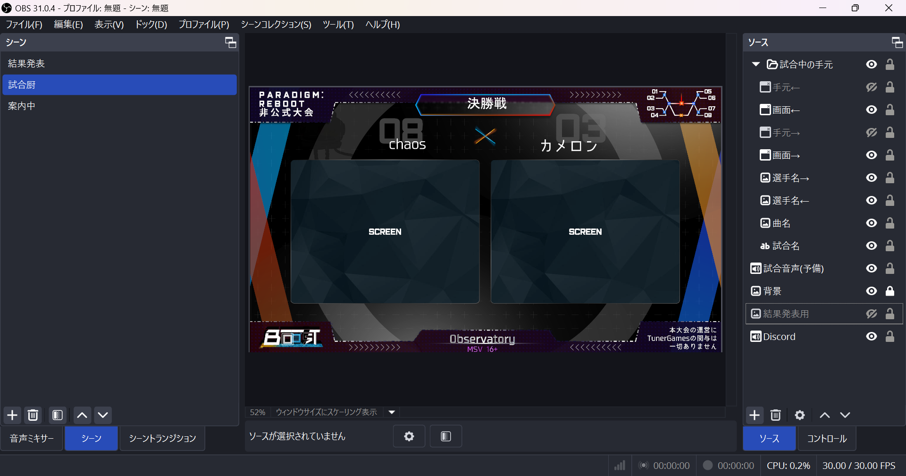

OBSを準備する
え？そこからやるの？
OBSとは映像や音声を統合してライブ配信や録画が行えるPC用の配信ソフトです。 ゲームプレイの映像や、自分を映した映像、お絵描きの様子などを音声付きでリアルタイムに配信したり、録画したりすることができます。
この項ではOBSの基本を解説していきます。
OBSのダウンロードまずは「どんな映像を作りたいか」を考えましょう。音ゲー大会の場合、以下のような要素を同時に映すことが多いです：
- プレイヤーのゲーム画面
- プレイヤー名やスコアのテキスト
- 解説・実況者のカメラ映像
- 大会ロゴや背景デザイン
これらを見やすく、情報が重ならないように配置するのが基本です。画像を作ってくれる人と相談しながらやりましょう。
OBSの「ソース」機能を使って、映像やテキスト、画像を自由に配置します。
- ゲーム映像 → 画面キャプチャ
- カメラ映像 → 「映像キャプチャデバイス」
- ロゴ・装飾・背景 → 「画像」
- 大会名・スコア → 「テキスト（GDI+）」
これらを一つの「シーン」にまとめることで、配信中の切り替えや演出もスムーズになります。
ゲーム音・マイク音・BGMのバランスは非常に重要です。ゲーム音が大きすぎると実況が聞こえなくなり、逆にマイク音が大きいと耳障りになります。事前に録画して確認するのがおすすめです。調節は音声ミキサーで行います。
基本ここがわかっていれば配信はできます。あとは自分が欲しい要素を調べて勉強していきましょう。